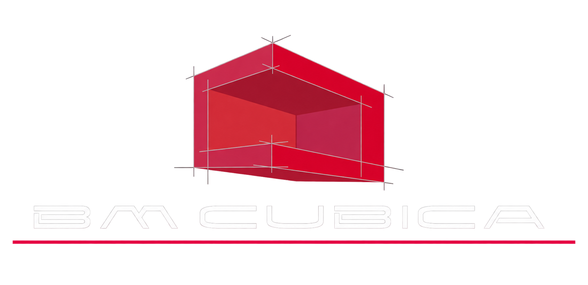

BM Cúbica

Una experiencia digital a la medida de sus proyectos
1El punto de partida
Herraidea abrió esta conversación. Su experiencia combina presentación visual, exploración de productos y herramientas que ayudan a entender una solución.
Para BM Cúbica proponemos aplicar ese enfoque a sus propios productos, materiales y procesos, con una identidad y un recorrido diseñados para su negocio.
De la inspiración a la cotización
La web ayudará al visitante a responder:
- ¿Qué solución puede funcionar en mi espacio?
- ¿Cómo se verá y cómo abrirá?
- ¿Qué cambia entre materiales y acabados?
- ¿Qué información necesitan para cotizar?
2Un showroom digital que se pueda explorar
Mostrar el espacio completo y los detalles que hacen la diferencia.
Proponemos una presentación de servicios y proyectos con fotografías amplias, acercamientos a herrajes y acabados, y explicaciones sencillas sobre funcionamiento, limpieza y uso. Desde cada solución, el cliente podrá encontrar un siguiente paso claro: explorar opciones, configurar una similar o pedir asesoría.
La dirección visual debe comunicar precisión y calidad de ejecución, respaldada por fotografías y contenido real del negocio.
Visual conceptual: página de solución con fotografía principal, detalles ampliados, muestras de acabados y el botón “Configurar uno similar”.
3La pieza central: calculadora visual de canceles
Una herramienta para que el cliente comience por su espacio y construya una configuración que el equipo pueda revisar. Proponemos iniciar con una familia de canceles de baño seleccionada junto con BM Cúbica.
Describe tu espacio
Distribución frontal o en esquina, con ilustraciones claras.
Agrega medidas
Ancho, alto y segundo lado, con guía visual de cada medida.
Explora la apertura
Opciones compatibles según las reglas que valide BM Cúbica.
Elige acabados
Compara cristales y herrajes del sistema seleccionado.
Revisa y solicita
Resumen de la configuración y solicitud de cotización.
Visual conceptual: el cancel como protagonista, acompañado de controles de medidas, apertura y acabados. En celular, los controles se organizan por pasos.
En todo momento habrá una alternativa disponible: “No tengo las medidas / necesito asesoría”.
4Ver qué cambia con cada elección
La calculadora debe responder visualmente a las decisiones del usuario.
Las proporciones se ajustan al cambiar ancho y alto.
Se muestra el movimiento de apertura de cada sistema.
Los cristales y herrajes se comparan sobre el mismo modelo.
Las combinaciones estarán limitadas a las opciones autorizadas por BM Cúbica. La visualización puede comenzar con esquemas interactivos; el alcance de una versión 3D se definirá según los modelos y recursos disponibles.
¿Puede mostrar un precio?
Podremos incorporar una estimación cuando BM Cúbica proporcione y valide las tarifas, reglas de configuración, instalación y cargos aplicables. La cotización definitiva dependerá de la revisión del proyecto y las medidas en obra.
5Una experiencia sencilla desde el celular
El cliente podrá explorar y configurar sin crear una cuenta. Cada paso tendrá preguntas cortas, imágenes de apoyo y opciones claras.
Podrá regresar, ajustar sus elecciones y continuar sin perder lo capturado durante el recorrido. Los datos de contacto se solicitarán al finalizar.
La solicitud preparará un resumen con la configuración y la zona del proyecto para compartirlo con el equipo comercial, facilitando que el asesor continúe la conversación con contexto.
6Segunda fase: una PWA para retomar y dar seguimiento
Proponemos evaluar la evolución de la web hacia una aplicación web progresiva —PWA—, accesible mediante un enlace y que pueda añadirse a la pantalla de inicio en dispositivos compatibles.
Esta segunda fase tendría sentido para usuarios que necesitan volver de forma frecuente: vendedores, arquitectos, instaladores o clientes con varios proyectos.
Guardar y retomar
Configuraciones disponibles para continuar después.
Proyectos por cliente u obra
Organización de la información por contexto.
Cotizaciones y versiones
Consulta del historial de cada solicitud.
Seguimiento de solicitudes
Estado y avance de cada requerimiento.
Catálogo como apoyo comercial
Material de consulta durante visitas y presentaciones.
Primero definiremos quién la usará y qué tareas necesita resolver. El guardado, seguimiento y acceso sin conexión requieren desarrollo específico; su alcance y compatibilidad se validarán en esta fase.
7Cómo lo vamos a trabajar
Entender y priorizar
Definir servicios, clientes, productos y proceso de cotización.
Presentar un prototipo
Mostrar una dirección visual y el recorrido completo de una solución para revisarlos juntos.
Desarrollar y validar
Integrar contenido real, reglas de configuración y funcionalidades acordadas, verificando la experiencia en celular y computadora.
Publicar y entregar
Comprobar el funcionamiento de las solicitudes, entregar accesos y acordar el seguimiento.
Desde el inicio quedarán definidos alcance, responsables, entregables y criterios de aprobación.
8Un primer alcance concreto
La primera fase propuesta contempla una identidad visual propia, presentación de servicios y proyectos, calculadora para una familia prioritaria de canceles y solicitud de cotización con resumen.
Y medir el recorrido
Ilustrativo: las proporciones reales se conocerán al medir el recorrido una vez publicado.
La segunda fase se definirá a partir de las necesidades operativas y del uso observado.
9El siguiente paso
Seleccionar juntos el primer sistema de cancel y preparar un prototipo que permita recorrer la experiencia completa.
Para hacerlo necesitaremos de BM Cúbica:
que el cliente llegue con su proyecto ya armado.
Cada fase se define, se valida y se entrega antes de avanzar a la siguiente.

×